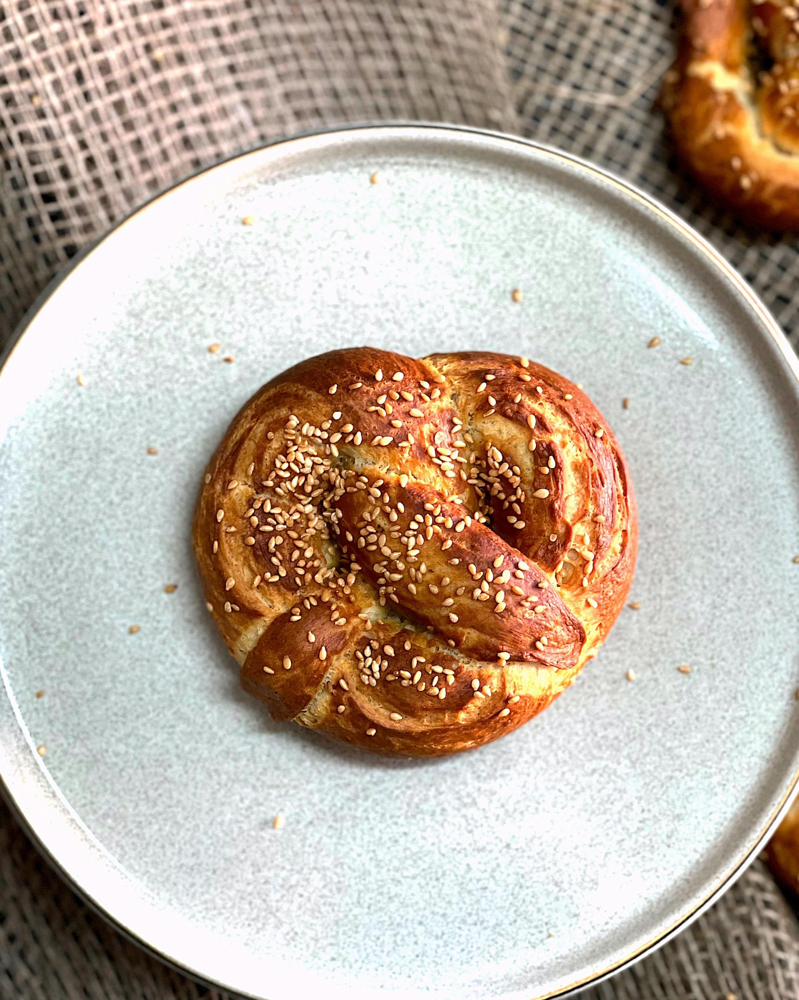

Why Comfort Food?
Comfort food is more than just a meal — it’s a memory. I grew up with warm soups, cheesy pasta, and homemade bread. These dishes remind me of family, laughter, and quiet evenings.

Comfort food is more than just a meal — it’s a memory. I grew up with warm soups, cheesy pasta, and homemade bread. These dishes remind me of family, laughter, and quiet evenings.
